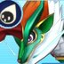

- 세대
- 성숙기
- 종족
 백신
백신- 속성
 빛
빛- 소비 메모리
- 8
- 장비 슬롯
- 1
스테이터스 (Lv.99)
HP123071위/81
SP17212위/81
ATK14361위/81
INT14827위/81
DEF14842위/81
SPD2074위/81
막대 길이는 등록된 디지몬 중 최고값 대비 비율이에요. 순위는 스테이터스가 등록된 디지몬끼리 비교해요.
필살기 1
구구렬공참  무 SP 10
무 SP 10
적 1체물리위력 30 × 3회
디지몬 속성(빛)과 다름
적 1체에 무속성 위력 30의 물리공격을 2~4회 한다.
SS(서포트스킬)
신비한 가호
상태이상이 될 확률이 50% 저하된다.
계승기 (레벨업 습득) 3
이 디지몬이 레벨업으로 배우는 스킬이에요. 배운 스킬은 진화·퇴화해도 계속 쓸 수 있어요.
| 습득 Lv | 스킬 | 속성 | SP |
|---|---|---|---|
| 10 | 세인트 너클 II 적 1체에 빛속성 위력 85의 물리공격. 명중률 95%. | 6 | |
| 18 | 샤인 레이저 I 적 전체에 빛속성 위력 20의 마법공격. 명중률 95%. | 4 | |
| 25 | 오라 배틀멤버 전체의 HP를 약간 회복한다. | 10 |
이 디지몬이 강한 상대
상대 종족(세로)과 속성(가로)별로 이 디지몬의 공격 필살기 중 가장 높은 배율이에요. 칸에 마우스를 올리면 계산 근거가 보여요.
×3 이상×2 이상보통×1 미만
| 상대 ↓ / → | |||||||||
|---|---|---|---|---|---|---|---|---|---|
| 백신 | ×1.00 | ×1.00 | ×1.00 | ×1.00 | ×1.00 | ×1.00 | ×1.00 | ×1.00 | ×1.00 |
| 데이터 | ×0.50 | ×0.50 | ×0.50 | ×0.50 | ×0.50 | ×0.50 | ×0.50 | ×0.50 | ×0.50 |
| 바이러스 | ×2.00 | ×2.00 | ×2.00 | ×2.00 | ×2.00 | ×2.00 | ×2.00 | ×2.00 | ×2.00 |
| 프리 | ×1.00 | ×1.00 | ×1.00 | ×1.00 | ×1.00 | ×1.00 | ×1.00 | ×1.00 | ×1.00 |
등록된 디지몬 중 ×2 이상으로 공격할 수 있는 상대 114마리
성숙기 같은 세대 31 · 다른 세대 상대는 도감에서 볼 수 있어요.
가드로몬×2.00가루몬(흑)×2.00개굴몬×2.00고스몬×2.00골드워매몬×2.00그라우몬×2.00그레이몬(청)×2.00달팽이워매몬×2.00데블몬×2.00레어몬×2.00록몬×2.00말벌몬×2.00모야몬×2.00베지몬×2.00블랙가트몬×2.00사이크로몬×2.00상굴몬×2.00스카몬×2.00시스터몬 느와르×2.00시스터몬 시엘×2.00시스터몬C(각성)×2.00시스터몬N(각성)×2.00아이스데블몬×2.00알카디몬 성숙기×2.00옐로우워매몬×2.00우가몬×2.00우드몬×2.00워매몬×2.00코어드라몬(녹)×2.00쿠가몬×2.00화이트스카몬×2.00
진화 전 디지몬 (퇴화 가능) 5
진화 가능 디지몬 3
래피드몬
- 레벨 28 이상
- 공격력이 75 필요
- 민첩이 75 필요
- 우정이 50% 필요
피콜몬
- 레벨 26 이상
- 최대 SP가 75 필요
- 지력이 80 필요
- 민첩이 80 필요

치린몬
- 레벨 30 이상
- 최대 SP가 75 필요
- 민첩이 100 필요
- 재능이 10 필요
진화 트리 · 레파몬까지 오는 길 + 다음 진화
왼쪽부터 진화 순서예요. 레파몬 오른쪽(점선 칸)은 바로 다음 진화 1단계예요. 그 뒤가 궁금하면 그 디지몬을 눌러 따라가 보세요. 선은 출발하는 디지몬의 색을 따라가요. 디지몬을 한 번 누르면 거기서 레파몬까지 가는 경로만 남고, 한 번 더 누르면 그 디지몬 페이지로 이동해요. 회색 칸은 아직 정보가 없는 디지몬이에요.
유년기I
유년기II
성장기
성숙기
완전체 ▸